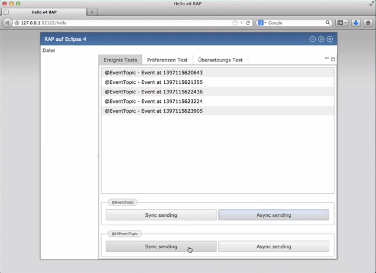

You may also check the New and Noteworthy for RAP 2.0 and the RAP 2.0 migration guide.
You can now allow users to upload files from their desktop by dropping them onto a widget.
To do so, use the SWT Drag&Drop API with the transfer type
ClientFileTransfer.
The following example shows how to enable a Label to accept files:
Label dropLabel = new Label( parent, SWT.BORDER );
dropLabel.setText( "Drop files here" );
DropTarget dropTarget = new DropTarget( dropLabel, DND.DROP_MOVE );
dropTarget.setTransfer( new Transfer[]{ ClientFileTransfer.getInstance() } );
dropTarget.addDropListener( new DropTargetAdapter() {
@Override
public void drop( DropTargetEvent event ) {
handleDroppedFiles( (ClientFile[])event.data );
}
} );
The event.data field will contain an array of ClientFiles, that
provide information on the dropped files.
It's an array because the user can also select and drag multiple files.
To actually upload the dropped files, the new client service ClientFileUploader
can be used:
ClientFileUploader uploader = RWT.getClient().getService( ClientFileUploader.class ); uploader.submit( uploadUrl, clientFiles );
Finally, you have to accept and store the files on the server. The fileupload component in the RAP Incubator can be used to handle uploads in RAP easily.
The FileDialog, also in the RAP Incubator, already uses the new API to provide
support for dropped files out of the box.
The DropDown widget has been graduated from the RAP Incubator and is now included in RWT. It is basically a popup-list that can be attached to a Text widget and filled with selectable text items. This widget simplifies the implementation of auto-suggest components, similar to the JFace FieldAssist. Compared to FieldAssist, the DropDown is much better suited for RAP because of its client-side implementation.

If you're looking for a ready-to-use auto-suggest add-on you should consider the AutoSuggest component that builds on the DropDown. The AutoSuggest widget remains in the DropDown Incubator repository, but it has been adjusted to work with RAP 2.3. Please make sure that you don't include the old Incubator version of DropDown in your RAP 2.3 target, as this may break your application.
In the class Cell the methods setLeft, setTop, setBottom and setRight now all have an optional parameter percentage that accepts a float value between 0 and 100. The value is relative to the width/height of the row and is added to the given absolute pixel offset.
The JavaScript part of the Combo widget implementation has been completely rewritten. It now uses the client-side DropDown implementation for it's list, allowing it to handle a much larger amount of items without performance degradation.
As a result, it's now also possible to apply an independent styling on Combo list items. The CSS element Combo-List-Item supports the properties color, background-color, background-image, text-decoration, text-shadow and padding.
JavaScript widget objects obtained via rap.getObject( id ) now have a field
$el
that represents the widget's HTML element and allows to manipulate it.
Text widgets have an additional $input field that represents their <input>
element. Examples:
button.$el.attr( 'test-id', 'submit-button' );
field1.$input.attr( 'test-id', 'username-text-input' );
Currently, these fields can only be used to set HTML attributes, but this already makes it possible to assign test-ids for easier UI-Testing. This API could also be used to add ARIA attributes that can be evaluated by screen reader software.
Due to changes in the Firefox API, RAP 2.2 and earlier was no longer able to correctly identify Firefox 29. As a result, existing RAP applications may crash or not start at all. This issue is fixed in 2.3. For older versions of RAP, please visit the FAQ for workarounds that you can apply yourself.
Recently, a bug has been introduced in the WebKit engine, which is the basis for Chrome, Safari and Opera. This bug led to RAP UIs becoming partly invisible when a Canvas widget or certain custom widgets are on screen. RAP now works around this issue by using a different way to apply widget backgrounds. For older versions of RAP, please visit the FAQ for workarounds that you can apply yourself.
The RAP 2.3.x versions will be the last to support Internet Explorer 7 and 8. We currently plan to release RAP 3.0 in Dec 2014 with a minimum requirement of version 9 or later for Internet Explorer. The minimum versions for other browser will likely be raised as well. This will allow us to clean up a lot of old code and concentrate more on HTML5/CSS3 based features not possible with older browsers.
It's now possible to run Eclipse 4 applications on RAP. To do so, you need some extra bundles in your target platform that currently live in the rap-e4 incubator repository. This incubator component is maintained by Tom Schindl. For the details, please check out Tom's blog post.

In an effort to remove the internals of the request processing (lifecycle and phases) from our
public API, we've marked all API in the package org.eclipse.rap.rwt.lifecycle
as deprecated.
This includes lifecycle adapters (LCAs), phase listeners, and the class WidgetUtil.
Most of this API is only relevant for custom widgets, and is replaced by the new API in the
package org.eclipse.rap.rwt.remote
(RemoteObject, OperationHandler etc.).
The class WidgetUtil is replaced by a stripped-down copy in
org.eclipse.rap.rwt.widgets.
PhaseListeners are going to be replaced by MessageFilters.
This new API is still internal and will be published in 3.0.
All deprecated API is still supported in 2.3 and will be removed in 3.0. We'll provide a migration guide that explains alternatives.
We already provide the class SingletonUtil to facilitate the conversion of classic singletons to UISession-scoped singletons for use in RAP's multi-user environment. This class has a new method named getUniqueInstance that accepts a UISession instance as a parameter. You can obtain a unique instance of a given class for the current UISession like so:
public static MySingleton getInstance() {
UISession uiSession = RWT.getUISession();
return SingletonUtil.getUniqueInstance( MySingleton.class, uiSession );
}
In this case, the method is equivalent to the existing method getSessionInstance(Class).
However, with the additional parameter, it allows you to obtain the singleton instance
for a given UISession even from another thread without having to wrap your code
in a runnable and pass it to uiSession.exec().
To prepare your singleton for access from background threads, you may consider adding a
parameter to the getInstance method as shown below.
Avoiding the static access to the UISession also helps to write better unit tests.
private static MySingleton getInstance( UISession uiSession ) {
return SingletonUtil.getUniqueInstance( MySingleton.class, uiSession );
}
The old method getSessionInstance() still exists and delegates to the new one,
so you should be able to adjust your code using an “Inline Method” refactoring.
Similar to UISession singletons, you can now also create singletons with application scope. Whenever you run multiple RAP applications in a single VM, there may be classes in a shared bundle that should have exactly one instance per application.
ApplicationContext context = RWT.getApplicationContext();
SingletonUtil.getUniqueInstance( MySingleton.class, applicationContext );
Entrypoints in RAP are registered with a servlet path (e.g. “/example”). When deployed in a servlet container, every web application also has a context path. For example, a WAR file named “myapp.war” will lead to the context path “/myapp” This results in a URL like the following:
http://example.com/myapp/example
It may be desirable to make the default entrypoint of an application directly available at the application's base URL:
http://example.com/myapp/
To enable this pattern, entry points can now also be registered at the root path (“/”):
public class ExampleApplication implements ApplicationConfiguration {
public void configure( Application application ) {
application.addEntryPoint( "/", ExampleEntryPoint.class, null );
}
}
Please note that for RWT standalone, you should map the RWT servlet to the empty string (the path “/” is a special case in the servlet spec, it identifies the so-called global servlet).
<servlet-mapping>
<servlet-name>rwtServlet</servlet-name>
<url-pattern></url-pattern>
</servlet-mapping>
Since RAP 1.5, the RAP server required that the initial request to an application was made using the HTTP GET method. Some users have reported that in certain restricted environments, it can be helpful to be able to start a RAP application with a POST request. Therefore we changed our policy and allow for RAP applications being accessed with a POST request again.
An overview of what changed in the RAP protocol can be found in the RAP Wiki.